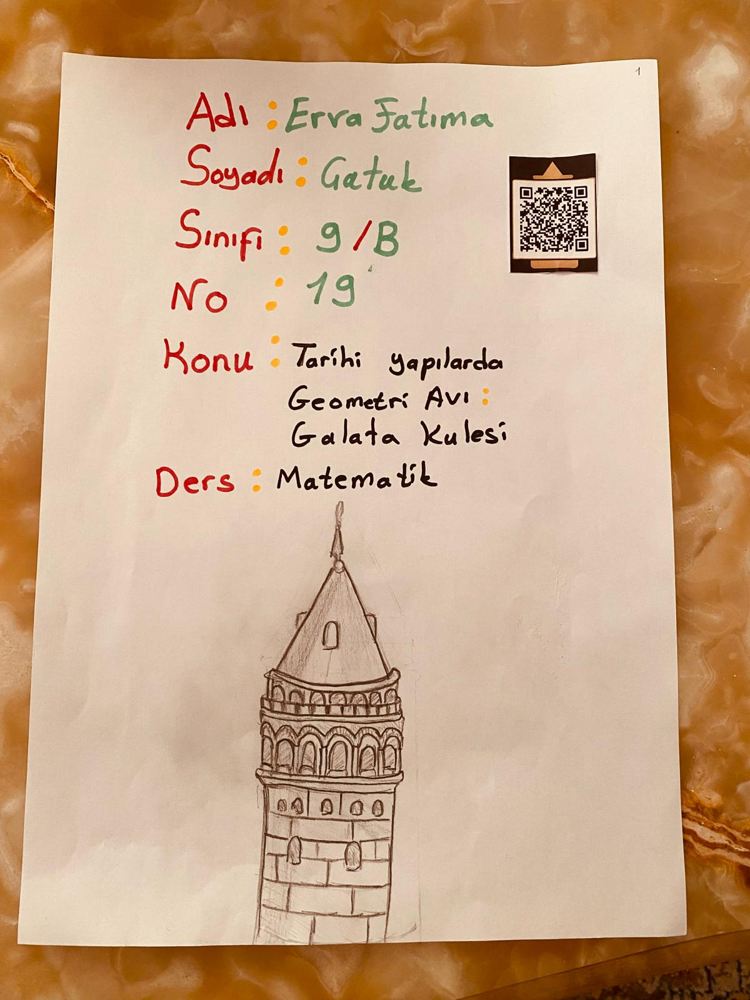
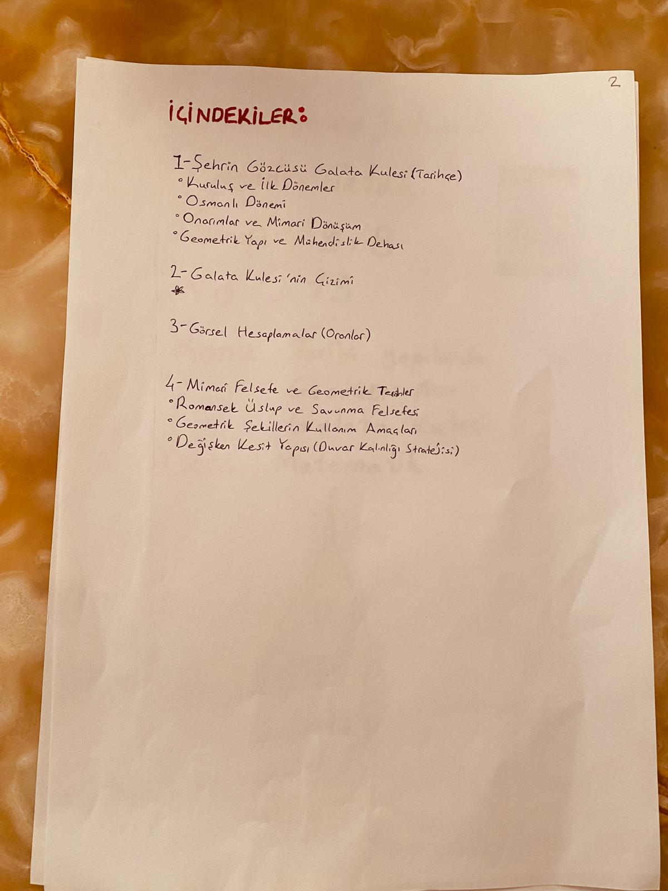
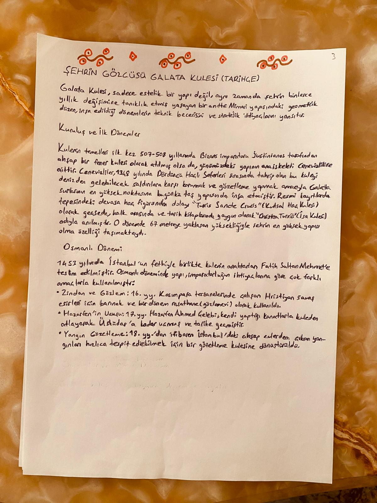
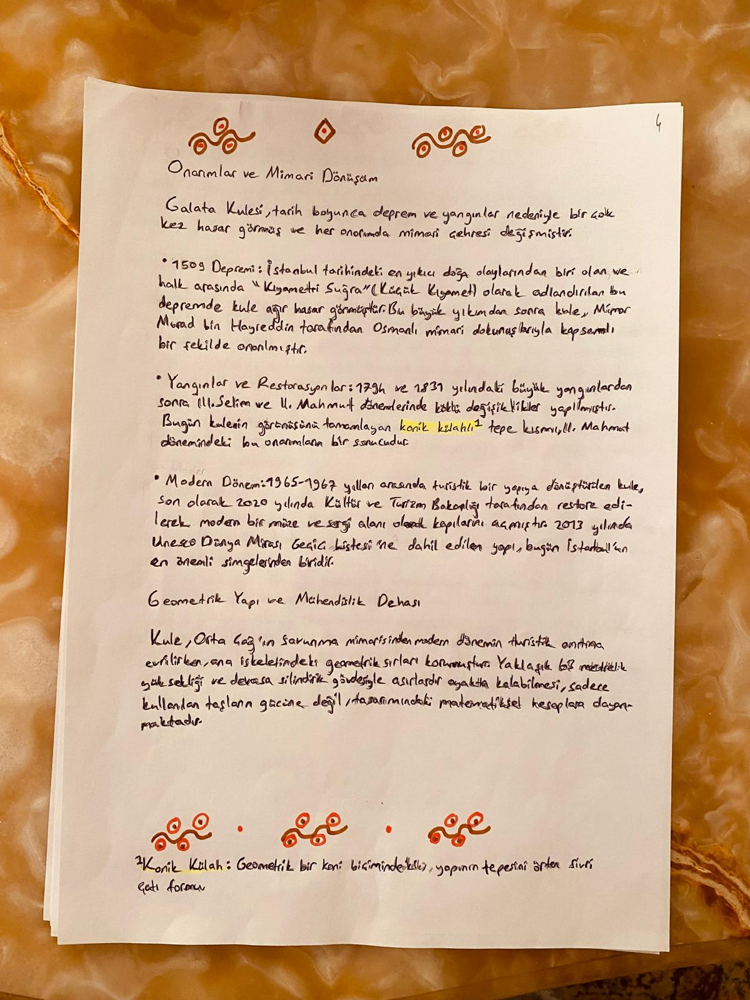
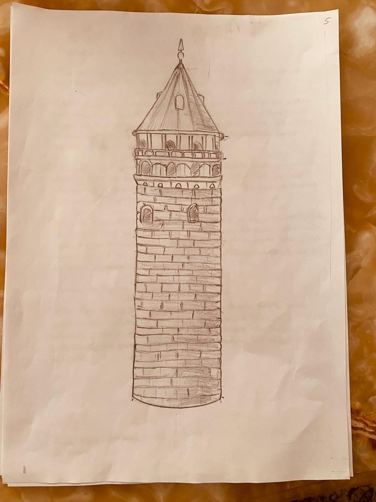
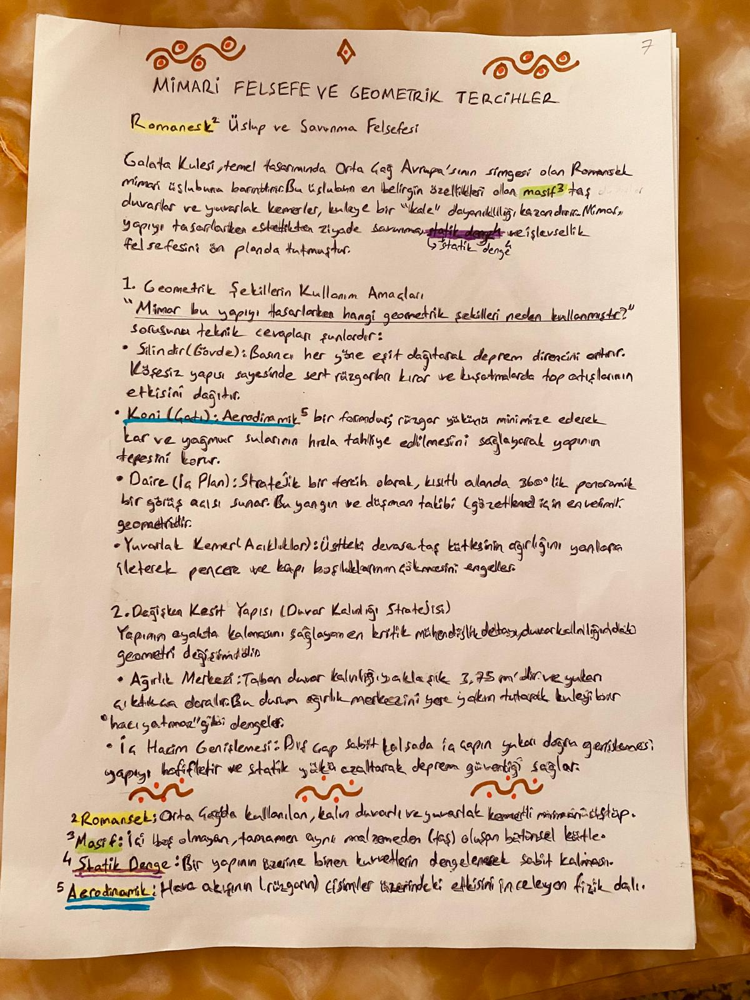
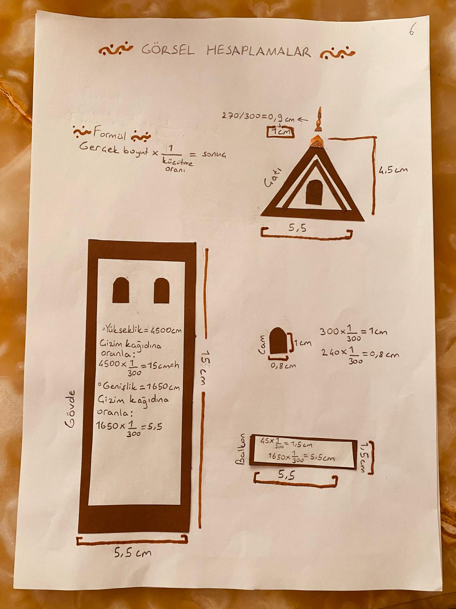

Fotoğraflar
Görsel Galeri
Galata Kulesi'nin büyüleyici fotoğrafları








528 yıllık tarihi ile İstanbul'un en ikonik yapılarından biri. Bizans'tan Osmanlı'ya, geçmişten bugüne uzanan eşsiz bir yolculuk.
1348 yılında Cenevizliler tarafından "Christea Turris" (İsa Kulesi) adıyla inşa edilmiştir. İstanbul'un en eski kulelerinden biridir.
66.90 metre yüksekliğinde, 9 katlı taş yapı. Duvar kalınlığı 3.75 metre olan kule, Galata surlarının en yüksek noktasında yer alır.
1632'de Hezârfen Ahmed Çelebi, kuleden takma kanatlarla uçarak Üsküdar'a ulaşmıştır. Havacılık tarihinin öncü olaylarından biridir.
Kulenin seyir terasından İstanbul Boğazı, Topkapı Sarayı, Ayasofya ve Sultanahmet Camii'nin eşsiz manzarası görülebilir.
Galata Kulesi'nin büyüleyici fotoğrafları







Ceneviz kolonisi tarafından "Christea Turris" adıyla surların en yüksek noktasına inşa edildi.
Fatih Sultan Mehmet'in İstanbul'u fethiyle kule Osmanlı yönetimine geçti ve askeri amaçlarla kullanılmaya başlandı.
Hezârfen Ahmed Çelebi, takma kanatlarla Galata Kulesi'nden Üsküdar'a uçarak tarihe geçti.
Büyük Beyoğlu yangınında zarar gören kule, III. Selim döneminde restore edildi.
Kapsamlı bir restorasyon ile kule halka açıldı. Seyir terası ve restoran eklendi.
Galata Kulesi, UNESCO Dünya Mirası Geçici Listesi'ne dahil edildi. Müze olarak hizmete açıldı.
QR kodu okutarak bu sunuma hızlıca erişebilirsiniz